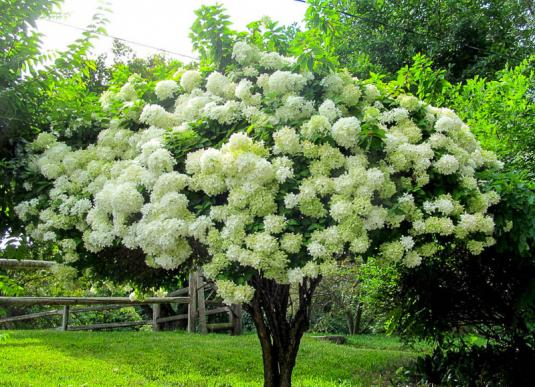

Міським жителям часом буває важко втекти від метушні, подихати свіжим повітрям і насолодиться прогулянкою на природу, але багатьом пощастило, і вони можуть знайти прекрасний зелений куточок у своєму місті. Від велетенських, що займають десятки квадратних кілометрів, до маленьких міських - парки є у кожній краіні, у кожному місті.
Україна — країна різних ландшафтів: від гір до моря, від полонин до степів. Тому не дивно, що тут так багато дивовижних і різних між собою парків. Україна може пишатися своїми національними парками. Вони всі різні, але унікальні. Кожний може пройтися стежками, наприклад, Довбуша на Прикарпатті або здійснити річковий маршрут в Одеській області.
'Парк' — це спеціальна обмежена природна або штучна територія, виділена переважно з метою рекреації, відпочинку. В побуті слова «парк» та «сад» далеко не розійшлися. Тому широко використовується словосполучення «садово-паркове мистецтво». Однак сад існує для постачання фруктів, тоді як парк може мати садову ділянку, а може не мати її . Перші парки у світі існували ще в Стародавні часи. Знамениті Висячі Сади Семіраміди можна вважати одним із перших парків. Крім того, достатньо в ранню епоху народилося паркове мистецтво в Китаї. Сади як явище прийшли в Європу з Близького Сходу і Азії. Саме там батьківщина абрикос, винограду, аличі, шовковиці, хурми. В Древній Греції плодові сади поступово витісняли святі гаї, але з'явилися парки біля значущих для суспільства місцях (сади Академії, де збирались філософи). Греки поширювали у своїх садах скульптури та малі архітектурні об'єкти — колонади, вівтарі для релігійних церемоній. Практика ставити скульптури в садах і парках була підхоплена в Європі в добу Відродження і перейшла далі в сади бароко і класицизму. Своє поширення мали сади в католицьких монастирях, а потім при замках феодалів. У другій половині XVI століття засновано найстаріший парк в Україні — Єзуїтський (тепер парк ім. І. Франка)
Броварня, корчма, цегельна, літні театри, кінотеатр, бомбосховища – усі ці поняття так чи інакше береже в собі історія парку імені Івана Франка – найдавнішого парку нашого міста. Передісторія парку починається ще в XVI ст., коли територія заміських ланів стала власністю Яна Шольц-Вольфовича. Саме він започаткував в цьому місці перший сад. Почату справу продовжив його спадкоємець і зять АнтоніоМассарі. Будучи венеціанцем за походженням, він облаштував сад на італійський манер. Однак по смерті венеціанця сад перейшов у власність міста. В 1614 році влада міста передала цей сад, разом ще з кількома ділянками у тимчасове користування монахам ордену Єзуїтів. Що правда, «тимчасовість» ця в результаті затягнулась аж на 160 років. За цей час єзуїти встигли звести в межах саду цегельню, броварню та корчму. Врешті-решт, тут діяв цілий фільварок. Завдяки монахам сад отримав і свою першу назву – Єзуїтський сад.
За весь час існування парк називали по-різному: Єзуїтський город, парк Костюшка, тепер — парк Франка. Багато відомих митців згадують його у своїх записах, як улюблене місце прогулянок. Сучасний стан і благоустрій парку Франка тішить і мешканців і гостей Львова.

Рослини паркуУ парку ростуть одні з найстаріших в Україні платан західний, бук, каштан, трьохсотлітні дуби, велетенські ясени. Серед екзотів з Північної Америки, Далекого Сходу, Середземномор'я - тюльпанове дерево, маньчжурська аралія, катальпа, оцтове дерево, золотий дощ звичайний, магнолія, деревоподібна гортензія, японська айва. | ||
|  | ||